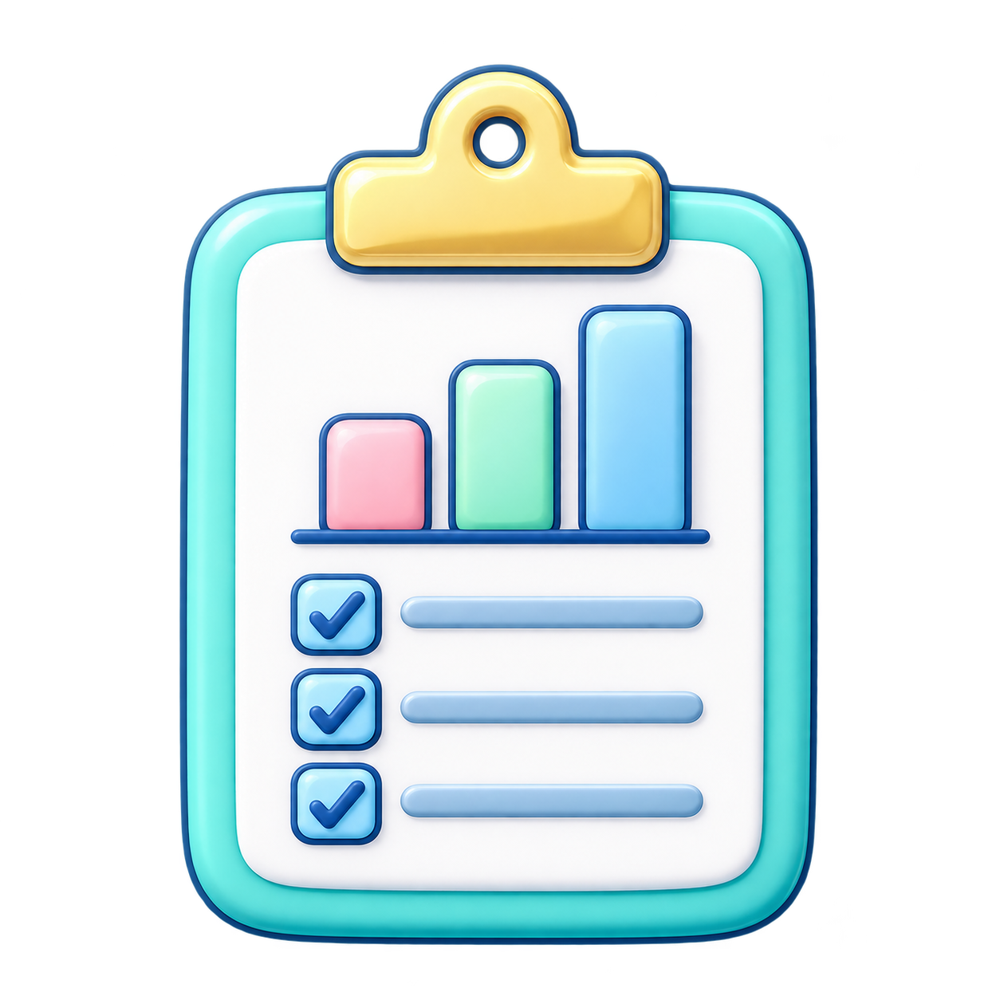

01
医療機関を知る・比べる
医療機関の情報を検索。施設の規模や届出などを確認し、比較の材料として役立てられます。
施設検索 ・ 施設比較医療経営の検討を、もっと身近に。
地域の人口、医療機関、外来や医療費の動向。
散らばった公開情報を整理し、これからの一歩を考えるためのWindowsアプリです。
Windows向け ／ Microsoft Storeから入手
WHAT YOU CAN DO ／ 主な機能
公開されている医療・人口データを、見やすい表やグラフに。
医療機関や地域をさまざまな角度から確認できます。
医療機関の情報を検索。施設の規模や届出などを確認し、比較の材料として役立てられます。
施設検索 ・ 施設比較
人口構成や将来人口、外来、医療費などの動向を、表やグラフで確認できます。
人口 ・ 外来 ・ 医療費地域の情報や収益シミュレーションを、経営課題や今後の取り組みを検討する参考に。
経営戦略 ・ 収益SIMFOR YOUR NEXT STEP ／ こんな方へ
地域に必要とされる医療を、これからも届けていくために。
公開データを使った情報収集と検討をお手伝いします。
気になる地域や医療機関の情報を、まずは確認するところから始められます。
GETTING STARTED ／ はじめ方
必要な資料は、分析に合わせて取得します。
保存した情報は、お使いのPCで利用できます。
Microsoft Storeから、お使いのWindows PCにインストールします。
気になる地域や、分析したい医療機関を選びます。
表やグラフで現状や変化を見ながら、次の検討につなげます。
CHOOSE YOUR APP ／ アプリのご案内
まずはfree版から。さらに資料を活用したい方にはpro版をご用意しています。
FREE
地域や医療機関の情報を、まずは気軽に確認したい方に。
Microsoft Storeで見る ↗PRO
より詳しい分析や資料出力を使い、経営の検討を進めたい方に。
Microsoft Storeで見る ↗機能や提供条件の詳細は、各ストアページおよびアプリ内でご確認ください。
ABOUT THE DATA ／ データについて
厚生労働省、e-Stat、医療情報ネットなどの公開情報をもとに、データを整理・表示します。資料の取得や更新にはインターネット接続が必要です。
推計値は一定の条件に基づく参考情報であり、将来の結果や個別施設の実績を保証するものではありません。対象年度・出典・計算条件と、各公表元の最新情報をご確認ください。